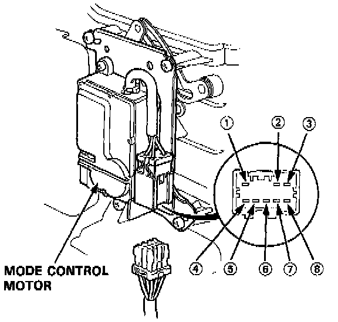
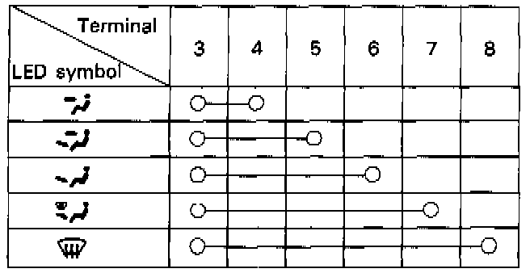

Component Test

1. Connect battery power to the No. 1 terminal of the mode control motor, and connect the No. 2 terminal to ground.
The motor should run, and stop at VENT. If it doesn't reverse the connections; the motor should run, and stop at DEF.

2. Plug the connector back in to the motor. Then operate the MODE switch on the control panel, and in each mode probe the back of the connector to check for continuity between terminals according to the table.